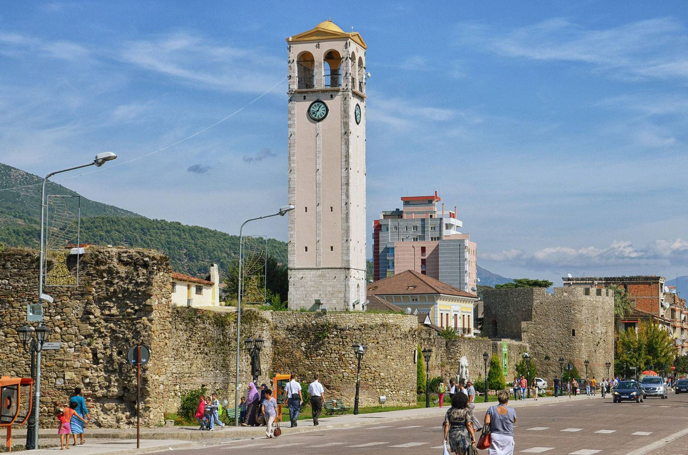

Elbasan

Informacione të përgjithshme
Vendndodhja: Shqipëria qendrore
Popullsia: Rreth 141,000 banorë
Qarku: Qarku i Elbasanit
Statusi UNESCO: Elbasani nuk ka status të veçantë UNESCO, por ka vlera historike dhe kulturore të rëndësishme.
Pse është i veçantë Elbasani
Elbasani është një qytet me histori të pasur, i njohur për kalatë, urat dhe traditat e tij kulturore. Pozicioni i tij strategjik në korsinë që lidh veriun me jugun e Shqipërisë ka ndikuar në zhvillimin e tij ekonomik dhe kulturor.
Vendet kryesore për të vizituar
- Kalasë e Elbasanit: Një kështjellë e lashtë me mure të fuqishme dhe muze historik.
- Ura e Kavajës: Një urë e vjetër mbi lumin Shkumbin, simbol i qytetit.
- Muzeu Historik i Elbasanit: Paraqet historinë dhe kulturën e rajonit.
- Xhamia e King Zogut: Një xhami me arkitekturë karakteristike dhe rëndësi fetare.
Trashëgimi kulturore dhe fetare
Elbasani është një qendër e rëndësishme kulturore dhe fetare, ku bashkëjetojnë komunitete të ndryshme me tradita të pasura fetare dhe artistike.
Produkte vendase
- Bujqësia dhe prodhimet lokale: Elbasani është i njohur për prodhimin e drithërave, perimeve dhe produkteve blegtorale.
- Ushqimi tradicional: Gatime tipike si byrek, fërgesë dhe pjata me mish të freskët.
- Pija lokale: Verëra dhe rakia tradicionale nga zonat përreth.
Natyra dhe aktivitetet
- Lumi Shkumbin: Mundësi për shëtitje dhe relaks pranë lumit.
- Mali i Goles: Ideal për ecje në natyrë dhe eksplorim.